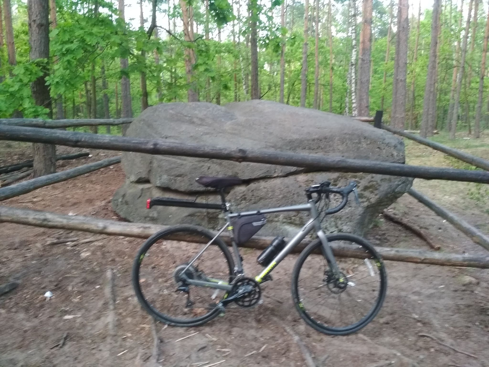

Hobby
Ciekawości
Tą zakładkę zamierzam roziwiajć wraz ze wzrostem panowania nad stroną. Co lubię robić?
Spacerowanie
Ze spacerem kojarzy się czysta rekracja do parku i spowrotem. Ja lubię spacerowanie bardziej "hardcorowe". Najdłuższy był spacer nad morze z Warszawy do Stegny 350km. Niestety poza skserowaną mapą nie posiadam dokumentacji. Jednak niektórymi "spacerami", mogę się podzielić "Wyprawa do źródeł Świdra"
Góry
Można się godzinami rozpisywać na temat gór, a nasze polskie są wyjątkowo piekne i bardzo różnorodne. Ta skecja będzie egoistycznie poświęcona mi, z dopiskiem "tu byłem", wzbogacona o moje prywatne ciekawoski
Nazwa gór

Nazwa gór

Nazwa gór
Nazwa gór
Nazwa gór
Nazwa gór
Rower
Niesamowite jak mało znamy swoją okolice, nawet w bezpośrednim sąsiedztwie największego miasta w naszym kraju, znajdują się przepiękne miejsca, praktycznie niedotknięte przez człowieka, masa zabytków czy innych ciekawych miejsc. Stają one w zasięgu ręki, właśnie dzięki rowerowi. Korzystając z naszych wspaniałych kolei dla średnio objeżdżonego "Janusza" z Warszawy całe województwo mazowieckie jest dostępne w ramach "jednodniowej wycieczki"
Mój rower z kamieniem :)
Fotografia
Jest to czyto amatorska zabawa która łączy ze sobą wszsytkie moje zainteresowania. Dzisiaj każdy ma dostęp do zaawansowanego aparatu i nosi go codziennie przy sobie. Można dzięki nim wykonywać piekne zdjęcia, chyba, że ktoś jest fotofilem(nie wiem czy taki jest) to na pewno wykryje mase różnic pomiędzy Lustrzanką za 5k a smartfonem( w sumie też za 5k :D) Nie mniej, najbardziej lubie łapać żywą naturę w jej środowkisu ale lubię też szczelać fotki ładnym krajobrazom. Zdjęcia ludzi mnie wkurzają bo odkąd posiadam pociechy mam dwa terabajtowe dyski zdjęć uśmiechniętych dzieci ;P.